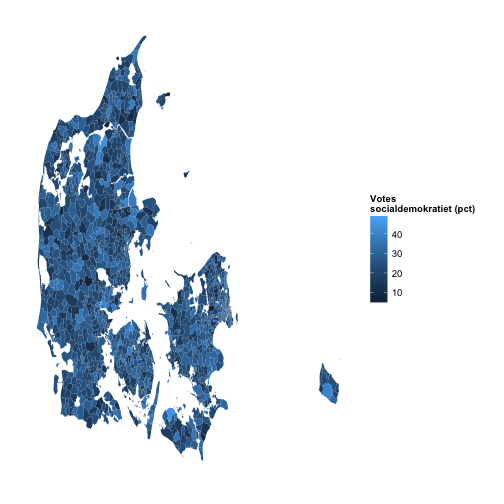

- Front Page
- Overview of this Slidify Deck (this page)
- Introduction
- Sample Map
- Get in touch
Niels Ole Dam
The Shiny App was made using the brilliant mapDK package made by Sebastian Barfort.
It is basically just demonstrating a subset of what this nice package is able to acomplish.
On the next two pages will be shown a sample map, generated directly by R in Slidify and the code that generated the map.
library(mapDK)
name <- "socialdemokratiet"
mapDK(values = "stemmer", id = "id",
data = subset(votes, navn == name),
detail = "polling", show_missing = FALSE,
guide.label = paste("Votes \n", name, " (pct)", sep=""))

For more information please contact: test@test.dk